Mera Bharat Mahan with Great Culture, Moral values & Ethics
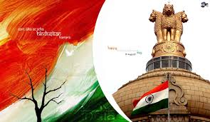
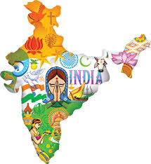
Be proud to be born an Indian
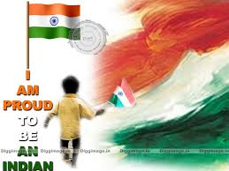
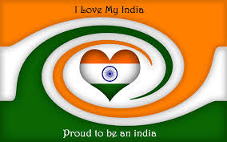
Be proud to say Iam an Indian
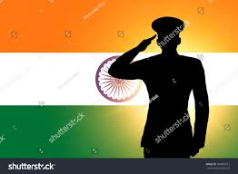
Where ever you are don't forget Iam an Indian
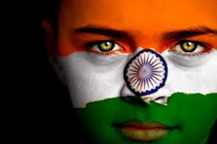
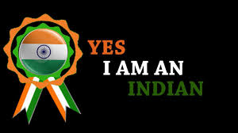
Mother Land is more important than a Mother. A Mother bears a child for 9 Months but Mother Land bears you from the date of Birth to until your body decomposes into in-organic substances
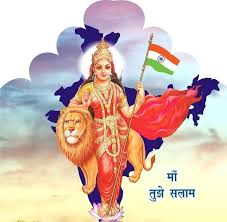
Bharat Mata has given you everything, try to serve this Mother with your Excellent Knowledge, Skills, Vision and Patriotism

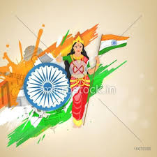
Atleast try to Know,Remeber and Respect the people who are sacrifying their lives for this Country
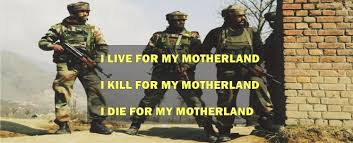
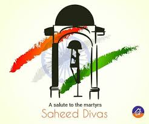
Give respect to this Nation and National Flag being a citizen of India
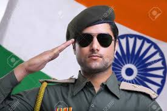
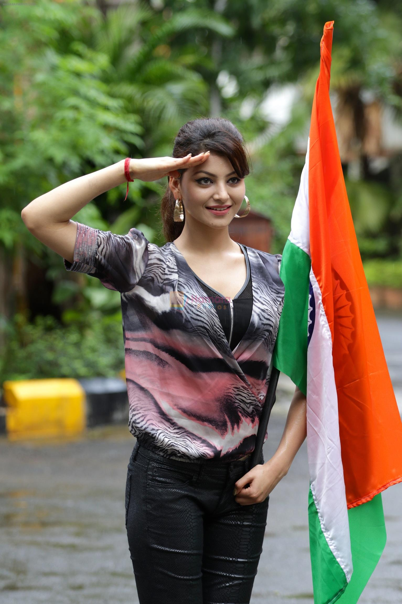
Give respect to your Parents who have given you a wonderful life to enjoy this beautiful World
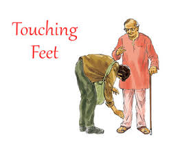
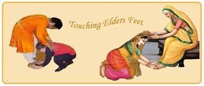
Give respect to your Teachers / Faculty who will show the best way to your life
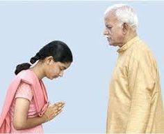
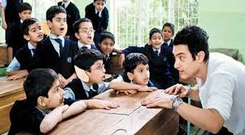
It is minimum responsibility to lookafter your old aged Parents and Grand Parnts because we are here because of them
I -- I
N -- Never
D -- Die
I -- If
A -- An Armed Person
Who is Protecting this Nation
- ARMY
- CRPF
- AIR FORCE
- NAVY
- BSF
- CISF
- ITBP
CENTRAL RESERVE POLICE FORCE
Central Reserve Police Force is the biggest defence organisation in India to provide total Internal security to entire India during Naxal infiltration, Militancy, Elections, Natural Disaster like Floods, Land slides, VIP security all the officials and any other disturbances in the Country. The Central Reserve Police Force (CRPF) is the premier central police force of the Union of India for internal security. Originally constituted as the Crown Representative Police in 1939, it is one of the oldest Central para military forces (now termed as Central Armed Police Force). CRPF was raised as a sequel to the political unrest and the agitations in the then princely States of India following the Madras Resolution of the All-India Congress Committee in 1936 and the ever-growing desire of the Crown Representative to help the vast majority of the native States to preserve law and order as a part of the imperial policy. After Independence, the force was renamed as Central Reserve Police Force by an Act of Parliament on December 28, 1949. This Act constituted CRPF as an armed force of the Union. Sardar Vallabhbhai Patel, the then Home Minister, visualised a multi-dimensional role for it in tune with the changing needs of a newly independent nation.
|
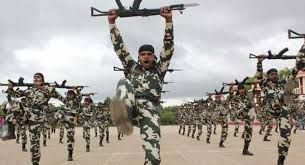
|
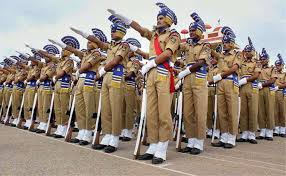
|
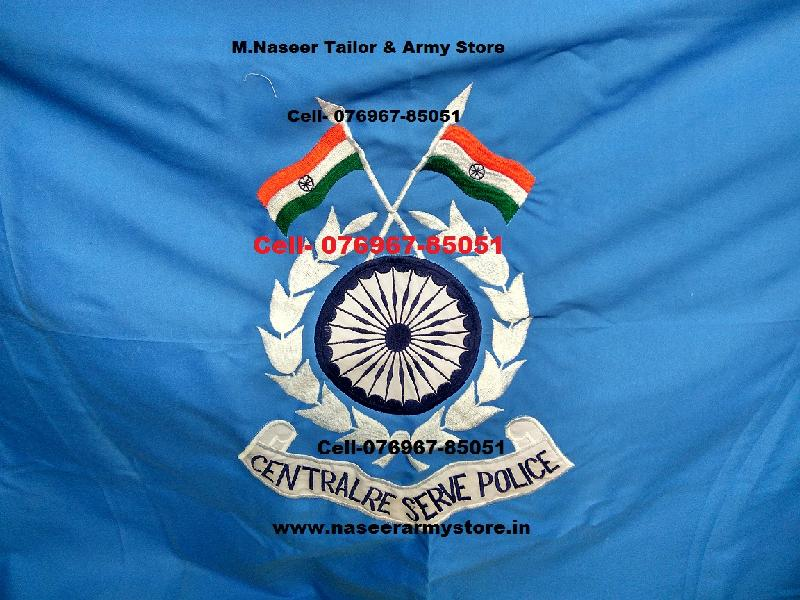
|
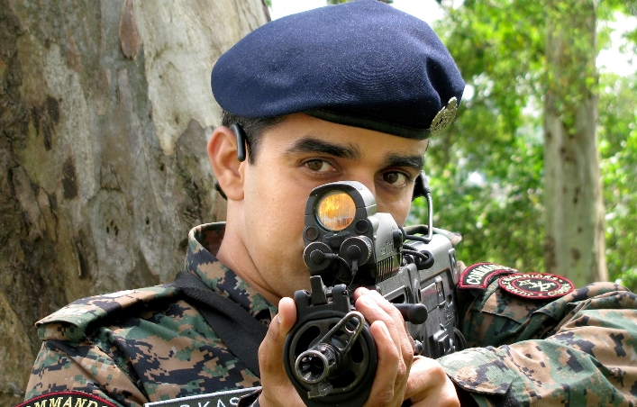
|
| CRPF Arms Drill |
CRPF Parade |
CRPF FLAG |
CRPF jawan with AK-47 |
ARMY
The Indian Army is the land-based branch and the largest component of the Indian Armed Forces. The President of India is the Supreme Commander of the Indian Army,[6] and it is commanded by the Chief of Army Staff (COAS), who is a four-star general. Two officers have been conferred with the rank of field marshal, a five-star rank, which is a ceremonial position of great honour. The Indian Army originated from the armies of the East India Company, which eventually became the British Indian Army, and the armies of the princely states, which finally became the national army after independence. The units and regiments of the Indian Army have diverse histories and have participated in a number of battles and campaigns across the world, earning a large number of battle and theatre honours before and after Independence.[7]
The primary mission of the Indian Army is to ensure national security and national unity, defending the nation from external aggression and internal threats, and maintaining peace and security within its borders. It conducts humanitarian rescue operations during natural calamities and other disturbances, like Operation Surya Hope, and can also be requisitioned by the government to cope with internal threats. It is a major component of national power alongside the Indian Navy and the Indian Air Force.[8] The army has been involved in four wars with neighbouring Pakistan and one with China. Other major operations undertaken by the army include: Operation Vijay, Operation Meghdoot and Operation Cactus. Apart from conflicts, the army has conducted large peace time exercises like Operation Brasstacks and Exercise Shoorveer, and it has also been an active participant in numerous United Nations peacekeeping missions including those in: Cyprus, Lebanon, Congo, Angola, Cambodia, Vietnam, Namibia, El Salvador, Liberia, Mozambique and Somalia.
|
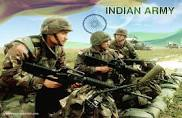
|
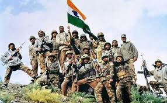
|
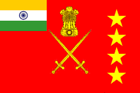
|
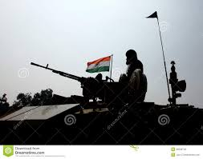
|
| Indian Army |
Indian Army |
Indian Army |
Indian Army |
AIR FORCE
The Indian Air Force's History precedes World War Two by eight years. The IAF was established by on 8 Oct 1932 when its formation was announced in the Gazette of India. No.1 Squadron formed at Drigh Road in Karachi on 1 April 1933 with a complement of six Indian Officers under the command of a British Officer. The Indian Air Force was officially established on 8 October 1932.Its first ac flight came into being on 01 Apr 1933. It possessed a strength of six RAF-trained officers and 19 Havai Sepoys (literally, air soldiers). The aircraft inventory comprised of four Westland Wapiti IIA army co-operation biplanes at Drigh Road as the "A" Flight nucleus of the planned No.1 (Army Co- operation) Squadron.
|
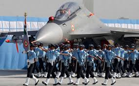
|
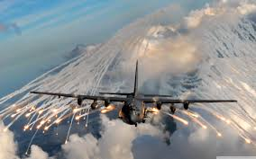
|
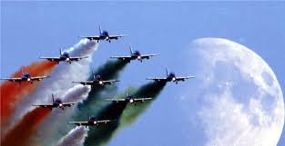
|
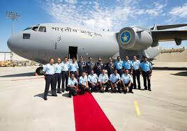
|
| Air Force |
Air Force |
Air Force |
Air Force |
NAVY
The Indian Navy (IN; IAST: Bhāratīya Nau Senā) is the naval branch of the Indian Armed Forces. The President of India is the Supreme Commander of the Indian Navy. The Chief of Naval Staff, a four-star Admiral, commands the navy.
The Indian Navy traces its origins back to the East India Company's Marine which was founded in 1612 to protect British merchant shipping in the region. In 1793, the East India Company established its rule over eastern part of the Indian subcontinent i.e. Bengal, but it was not until 1830 that the colonial navy was titled as His Majesty's Indian Navy. When India became a republic in 1950, the Royal Indian Navy as it had been named since 1934 was renamed to Indian Navy.
The primary objective of the navy is to safeguard the nation's maritime borders, and in conjunction with other Armed Forces of the union, act to deter or defeat any threats or aggression against the territory, people or maritime interests of India, both in war and peace. Through joint exercises, goodwill visits and humanitarian missions, including disaster relief, Indian Navy promotes bilateral relations between nations.
|
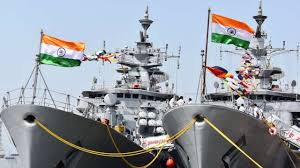
|
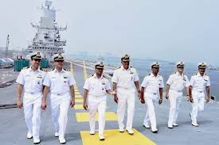
|

|

|
| Indian Navy |
Indian Navy |
Indian Navy |
Indian Navy |
BORDER SECURITY FORCE
The Border Security Force (BSF) is the primary border defence organisation of India. It is one of the five Central Armed Police Forces of the Union of India, it was raised in the wake of the 1965 War on 1 December 1965, "for ensuring the security of the borders of India and for matters connected there with".[5][6] It is a Central Armed Police Force charged with guarding India's land border during peacetime and preventing transnational crime. It is a Union Government Agency under the administrative control of Ministry of Home Affairs. The BSF has its own cadre of officers but its head, designated as a Director-General (DG), since its raising has been an officer from the Indian Police Service. It is an Armed Force of the Union of India tasked with various assignments from time to time.[6] The BSF has grown exponentially from a few battalions in 1965, to 186 battalions with a sanctioned strength of 257,363 personnel including an expanding air wing, marine wing, artillery regiments, and commando units.[7][8] It currently stands as the world's largest border guarding force. BSF has been termed as the First Line of Defence of Indian Territories.[9]
|
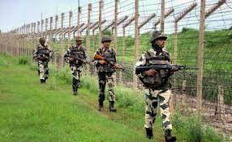
|
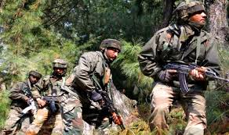
|
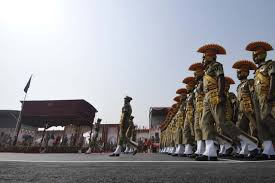
|
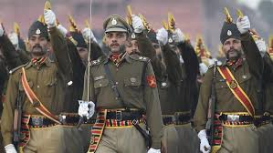
|
| BSF |
BSF |
BSF |
BSF |
CopyRights © 2018 , Defence Services of India
All Rights Reserved
Developed and Maintained by Ramana with the support of Naveen Sir